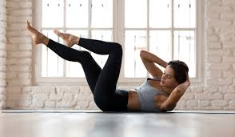

- La ciencia reveló cuáles son los 7 ejercicios más efectivos .
6 jul. 2020 — - Qué tipo de ejercicios abdominales son más efectivos y . - BBC
- Los ejercicios para abdominales más efectivos según la ciencia
- Estos son los 3 ejercicios más efectivos para marcar los .
- Los 3 ejercicios más efectivos para eliminar la "pancita" y .
- Los 5 abdominales más efectivos y más seguros - Sportlife
- Los 5 ejercicios abdominales más efectivos y seguros .
- Abdominales de pie. Qué son, cómo hacerlos y ejercicios
- Estos son los 3 ejercicios más efectivos para marcar los .
- Rutina de abdominales para mujeres que puedes hacer en casa